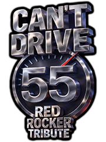

One foot on the brake and one on the gas.

The band is loaded up and the next gig is across town — but the clock is ticking. Doors open in an hour, the promoter is calling, and the only thing between you and the stage is a long stretch of open highway.
You are behind the wheel. The gear is in the back. The setlist is ready. All you have to do is get there.
One foot on the brake and one on the gas, weaving through traffic that just will not move fast enough. You tried your best illegal move, and a big black and white cruiser crushed your groove. Again.
The judge said one more and you are done. License gone. Face posted. Wanted dead or alive. But the band is counting on you, and when you drive that slow, you know it is hard to steer. You cannot get your car out of second gear. What used to take two hours now takes all day.
So here you are again. Open road. Golden hills. The venue getting closer. And those flashing lights in the distance getting closer too.
The band does not care about speed limits. They just need to make soundcheck.
"Go on and write me up for 125. Post my face, wanted dead or alive. Take my license, all that jive — I can't drive 55."
Your car accelerates automatically. All you need to do is steer.
On desktop, use the left and right arrow keys to steer. On mobile, slide your finger left and right across the screen — your finger position controls the car directly, just like sliding a hockey puck.
Stay on the road. Dodge the police cruisers. Survive as many laps as you can before time runs out or you run out of lives.
The highway curves through rolling hills. Early on, the curves are gentle and the road is empty — enjoy the drive. But the further you go, the tighter the turns get and the more cops show up.
Police cruisers appear gradually. At first it is just one, far ahead. Then another. Then they start coming faster. By the time you are deep into the run, the road is full of them.
If you go off the road, your car slows to a crawl and the screen shakes. Get back on the asphalt as fast as you can.
Your speed is displayed on the speedometer. You have 5 lives and 60 seconds on the clock. The drive is broken into 3 miles — complete each mile and you get 30 more seconds. Make it through all 3 and the band plays tonight.
Hit a cop and you lose a life. The road clears after a crash so you can get back up to speed before the next one appears.
Pass a cop cleanly and you will hear it — that is the sound of getting away with it.
The road curves pull your car. On a left curve, you will drift left — steer right to compensate. On a right curve, the opposite.
The first stretch of road has no cops. Use it to learn how the steering feels at speed.
Billboards and speed limit signs fly past on both sides of the road. They are not obstacles — just reminders of the law you are breaking.
When you see a cop ahead, do not panic. Small, smooth steering adjustments work better than big swerves.
The highway is calling. The cops are waiting. The band is in the back seat. And you still cannot drive 55.
"When I drive that slow, you know it's hard to steer. And I can't get my car out of second gear."
Guitar by Stephen Gendron
← Back to Game